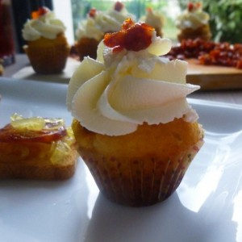
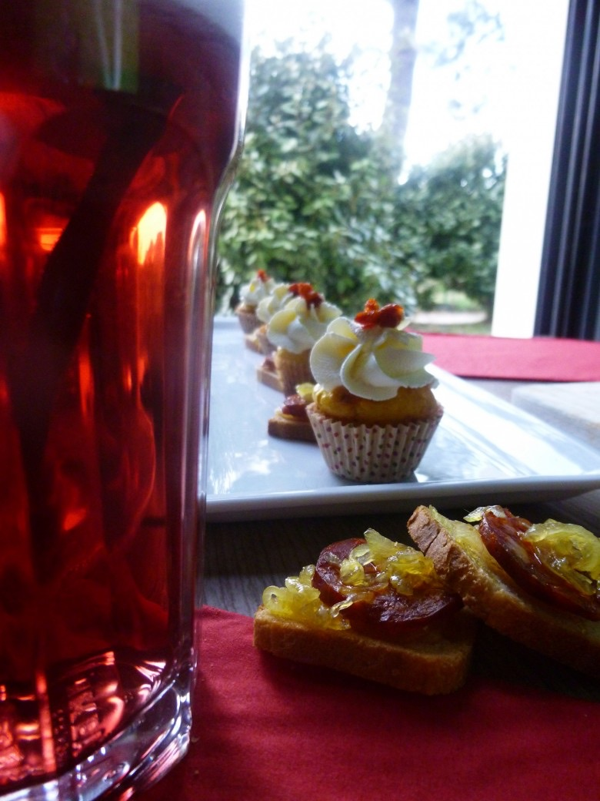
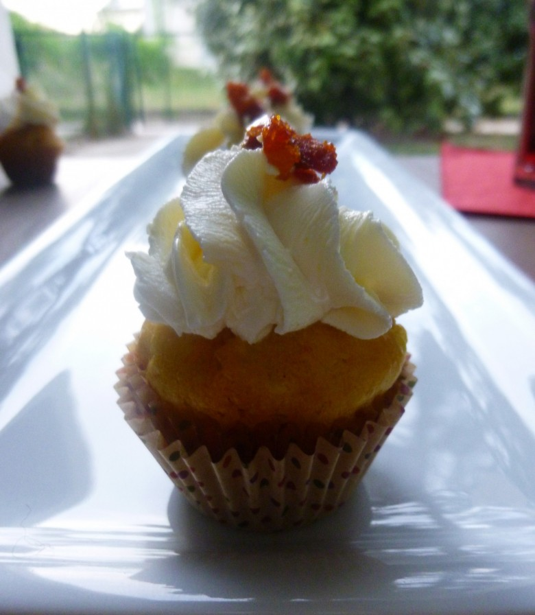

Minis cupcakes au chorizo, oignons caramélisés et parmesan {Battle food #21}

Pour ma première participation à la Battle food je vous propose des minis cupcakes au chorizo, oignons légèrement caramélisés et parmesan.
Ça y est on y est lundi 23 juin, jour où il faut poster « la » recette de la battle food.
Grande première pour moi! Mais une battle food c’est quoi? Il s’agit d’un défi culinaire entre blogueurs et non blogueurs autour d’un thème choisi, juste pour le plaisir de cuisiner, d’inventer et de partager de merveilleuses recettes!
Cette session a été organisée par Delices cookie’s sur le thème des tapas!! Honnêtement je ne pouvais pas rêver mieux pour ma première participation! Je ne dirais pas que les tapas sont toute ma vie mais presque^^ 🙂 Inutile de dire que les idées ont fusé dans tous les sens.
Les tapas symbolisent la cuisine espagnole. A l’origine en Espagne elles se dégustent à 18h permettant ainsi de tenir jusqu’à l’heure du diner entre 21h30/22h. Chez nous, on les sert en apéritif, ou même pour en faire un repas en totalité.
A l’occasion de cette battle food, j’ai choisi de revisiter une tapas servie en Espagne. Il s’agit d’un morceau de pain gratté à l’ail surmonté de chorizo et d’oignons légèrement caramélisés que j’ai choisis de saupoudrer de parmesan.
Comme le titre de mon article l’indique, j’ai décidé de reprendre cette tapas et d’en faire des minis cupcakes au chorizo.
Je vous laisse découvrir la recette!!
Ingrédients
- farine - 180g
- parmesan - 50g
- levure chimique - 1 sachet
- huile d'olive - 20g
- oeufs - 3
- lait - 80g
- oignon - 1
- sucre - 2 càs
- chorizo - 85g
- cream cheese (philadelphia) - 250g
- chorizo
Instructions
- Couper les oignons en fines lamelles
- Dans une poêle à feu doux, faire fondre les oignons dans l'huile d'olive
- Ajouter deux cuillères à soupe de sucre
- Une fois les oignons légèrement caramélisés, les sortir du feu et réserver
- Couper le chorizo en tous petits morceaux et réserver
- Dans une jatte, mélanger la farine la levure le sel et le poivre
- Dans un bol battre les œufs et mélanger avec l'huile d'olive et le lait
- Petit à petit verser le mélange œufs-huile-lait dans la farine
- Mélanger au fur et à mesure afin d'obtenir un mélange homogène
- Ajouter le parmesan et le chorizo
- Mélanger à nouveau et ajouter les oignons caramélisés
- Remplir une poche à douille avec le mélange et le verser dans des petites caissettes jusqu'au 3/4
- Enfourner pendant 20min à 180°
- Laisser les cupcakes refroidir et pendant ce temps préparer le topping
- Battre le cream cheese pour l'assouplir un peu
- Couper en tous petits carrés quelques morceaux de chorizo pour la déco
- Remplir une poche à douille de cream cheese munie de la douille de votre choix et glacer les cupcakes refroidis.


Les tips de la communauté
Cupcakes salés originaux qui ont reçu des commentaires très enthousiastes. Les lecteurs apprécient le côté créatif et gourmand de la recette, avec demandes de clarifications sur les quantités.
Astuces
- Ajouter environ 85 g de chorizo coupé en petits dés plus quelques uns pour décoration
- Les servir froids plutôt que tièdes ou chauds
- Ne mettre en place le glaçage que sur cupcakes complètement refroidis pour éviter la fonte
- Cupcakes se dégustent froids pour meilleur résultat
Ajustements signalés
- combien de grammes de chorizo dans la pâte à cupcake?
- absolument que le cupcake soit froid pour ne pas que le glaçage fonde ! Donc même au moment de la dégustation il ne faut pas les réchauffer 😉